Every result object has a plot() method that returns a
ggplot, so the display can be modified with the usual + and
saved with ggplot2::ggsave(). The colours and shapes are
the same on every display: providers above the
reference in orange triangles, below in blue squares,
not different in grey circles, not
tested in light grey crosses.
library(pprof)
d <- sim_kecc(n_providers = 150, provider_size = c(12, 100), seed = 11)
pd <- pp_data(d, y = "y", x = c("x1", "x2", "x3"), provider = "provider",
patient = "patient", message = FALSE)
fit <- fit_logistic_fe(pd)
tst <- test(fit, statistic = "wald", variance = "robust", null_model = "empirical")Caterpillar plot
Every provider’s estimate and interval in order of the estimate, coloured by its flag, with the reference as a dashed line. The intervals are those of the test (calibrated when the test was), so an interval excludes the reference exactly when the provider is flagged.
plot(tst)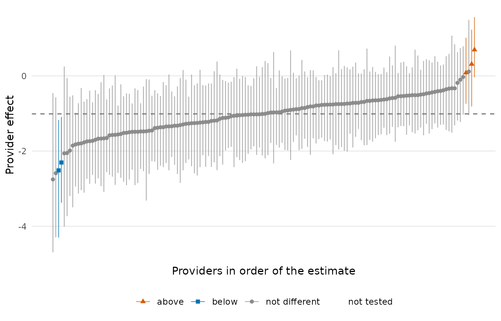
plot(tst, highlight = tst$provider[tst$flag == 1][1:3])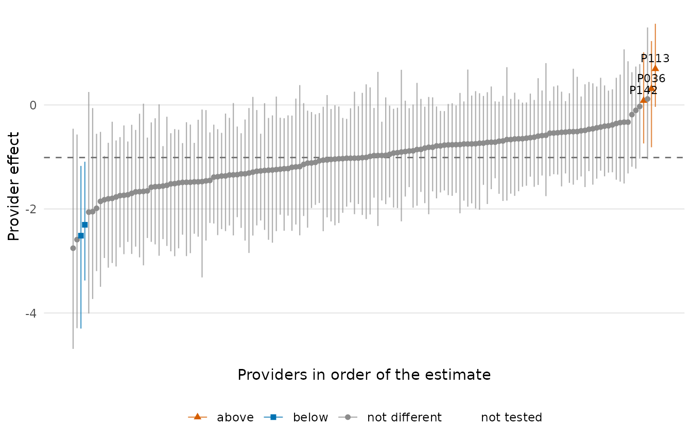
Funnel plot
Estimates against precision, with control limits from the same test as the flags: a provider outside the limits is a flagged provider, nothing else. For a test with standard errors the x axis is \(1 / se^2\) and the limits are \(\theta_0 \pm c \cdot se\) at the test’s level (solid) and at 0.998 (dashed); when the test was calibrated with an empirical null there is one panel per null group, each with its own limits.
plot(tst, type = "funnel")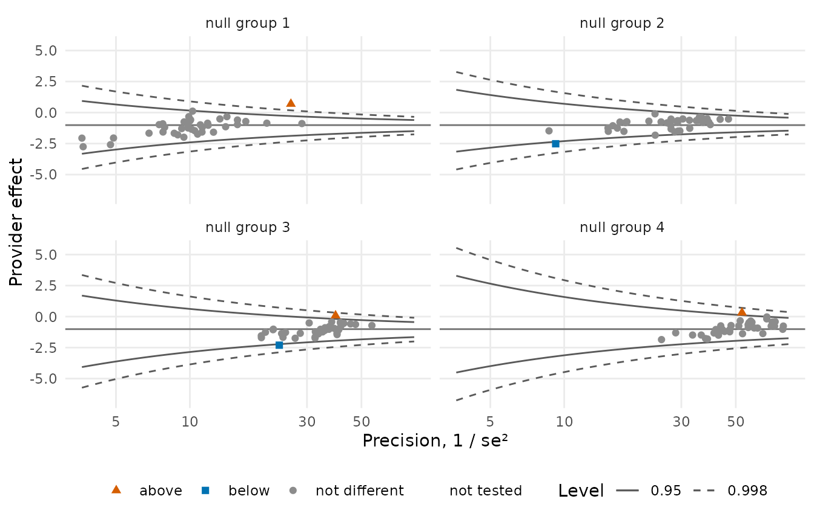
For the Poisson tests of a Cox fit the x axis is the expected number of events and the limits are the counts the test flags at every expected count:
s <- sim_kecc(n_providers = 120, provider_size = c(15, 80), type = "survival", seed = 3)
ps <- pp_data(s, x = c("x1", "x2", "x3"), provider = "provider", patient = "patient",
time = "stop", start = "start", event = "event", cutoff = 0, message = FALSE)
cox <- fit_cox(ps)
plot(test(cox, min_expected = 2), type = "funnel")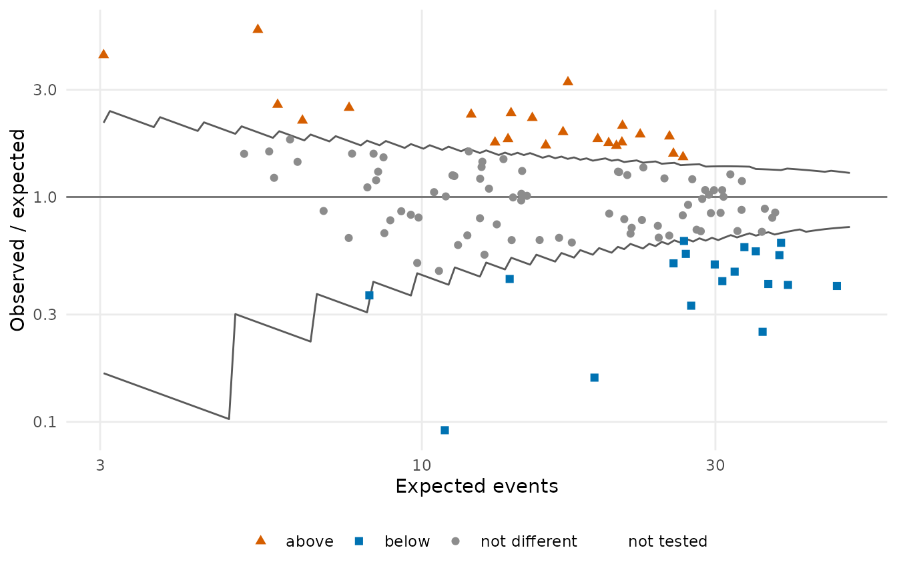
Flags by provider size
The shares of providers flagged above, below and not different, within quartiles of provider size and overall. The display behind the empirical null: under the theoretical null the share of flagged providers grows with size.
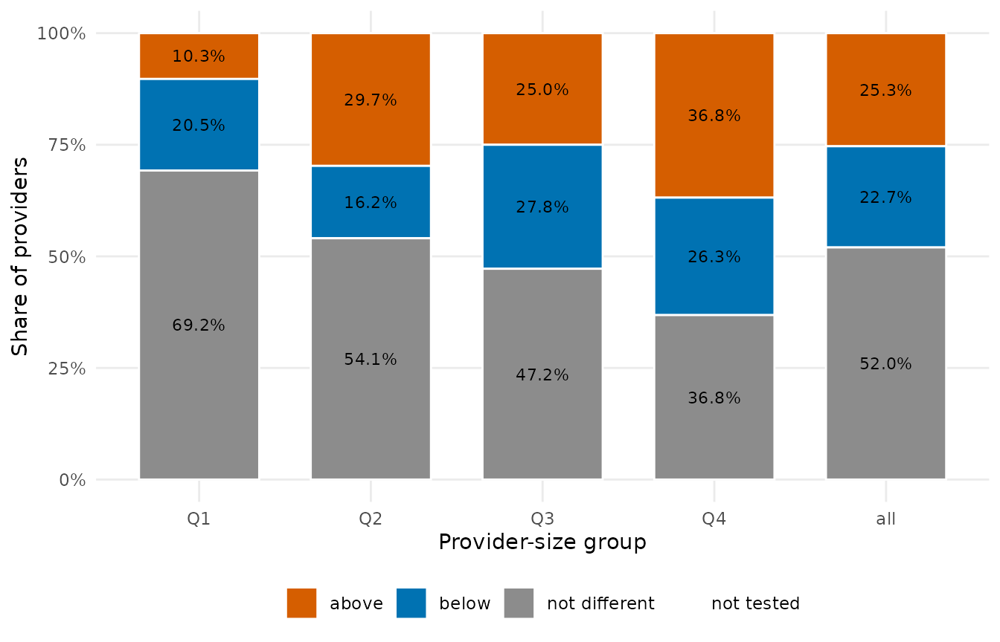
plot(tst, type = "bar")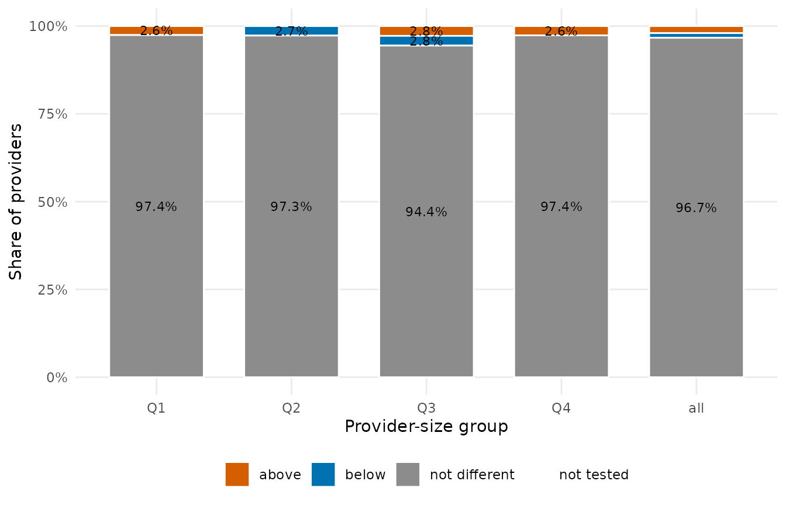
Observed against expected
A standardize() result draws the observed total against
the expected one with the diagonal; pass the test to colour the
providers. type = "funnel" draws the ratio against its
precision \(E^2 / V\): without a test,
with the normal limits of the naive score statistic; with a score test,
that test’s own funnel, so that the limits and the colours come from the
same test (a Wald-type test is drawn with
plot(test, type = "funnel"), above).
sm <- standardize(fit)
plot(sm, test = tst)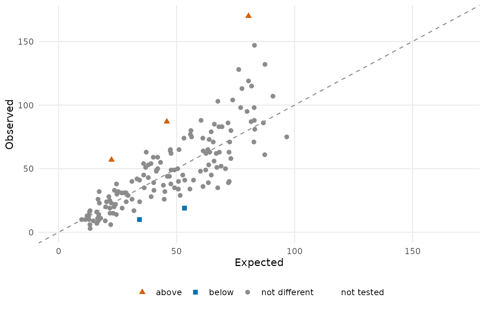
plot(sm, type = "funnel")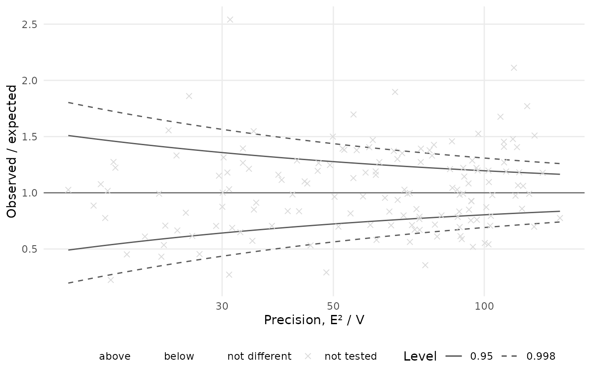
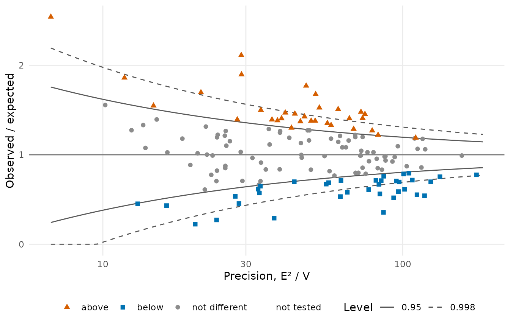
Null calibration
The statistics against the theoretical and the fitted null, one panel per size group: the display that shows why an empirical null is needed and what it fitted.
plot(null_model("empirical", test(fit, statistic = "wald", variance = "robust")))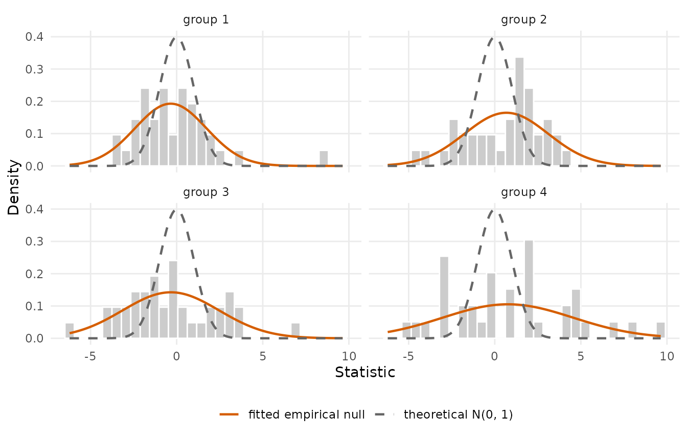
Reliability curve
expected <- stats::plogis(stats::median(coef(fit)$gamma) + fit$linear_predictor)
plot(iur("bootstrap", obs = fit$data$y, expected = expected, provider = fit$data$provider,
n_boot = 50, seed = 1))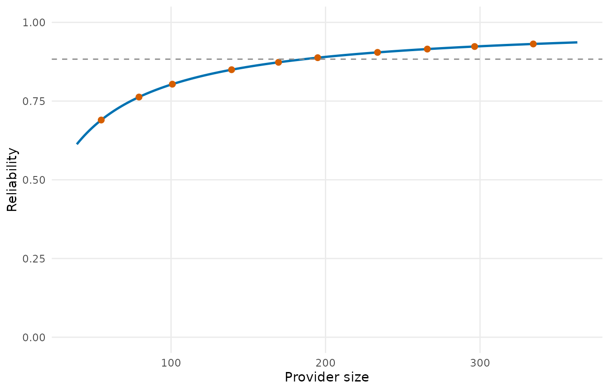
Selection paths and cross-validation
d6 <- sim_kecc(n_providers = 60, n_covariates = 8, beta = c(0.6, -0.5, 0.4, 0, 0, 0, 0, 0),
seed = 4)
pd6 <- pp_data(d6, y = "y", x = paste0("x", 1:8), provider = "provider", patient = "patient",
message = FALSE)
path <- var_select(pd6, n_lambda = 30)
plot(path)

Flags under the alternatives
flag_stability() lines up the flags of several tests,
for the providers flagged by at least one of them:
st <- flag_stability(
wald_robust = test(fit, statistic = "wald", variance = "robust"),
score_robust = test(fit, statistic = "score", variance = "robust"),
empirical = tst,
exact = test(fit, statistic = "exact"))
plot(st)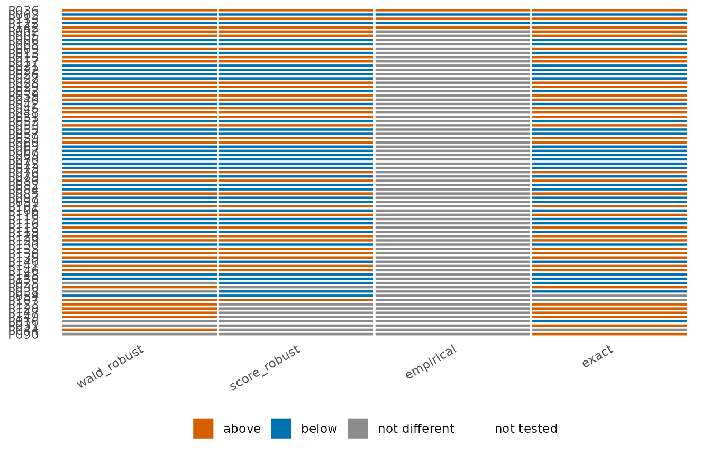